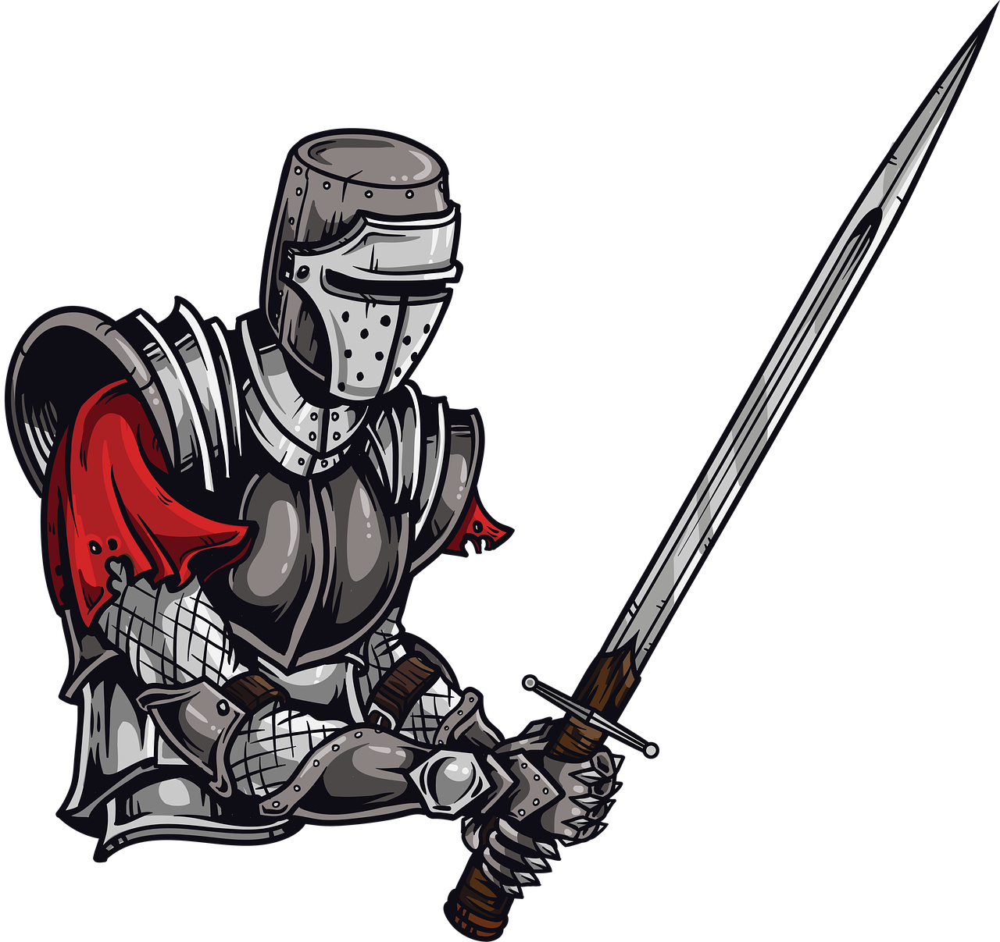

CRIE
fichas.
Com este criador de fichas para o sistema de RPG "Tormenta 20", você pode montar seus personagens de forma mais rápida e organizada. A ferramenta faz os cálculos automaticamente, ajuda a controlar atributos e habilidades e permite salvar todas as suas criações com facilidade. Assim, você evita erros, economiza tempo e pode focar mais na história, nas aventuras e na diversão da campanha. Além disso, suas fichas ficam guardadas para você acessar, editar ou atualizar quando quiser.
